Ethereum & MaidSafe: Overlay P2P Network Using XOR Logical Bicondition.
Click on this link for the companion site
Aim:
Kademlia is a well known routing algorithm based on XOR logical biconditional operations to structure the peer to peer networks on the Internet.
In this work, we conducted a mathematical study of the different topological spaces that can be obtained from the XOR logical biconditional operations. We are concerned with the properties of these topological spaces when the peers are labeled by random keys obtained from a higher address space size, for instance 512 and more.
We conducted a number of numerical simulation using keys (SHA512) as the ones practically used in two recent projects MaidSafe and Ethereum to investigate properties as connectedness, uniformity, continuity and boundary in their overlay peer to peer networks.
Definition: Peer-to-peer (P2P) is a decentralized communications model in which each peer has the same capabilities and either peer can initiate a communication session. Unlike the standard model client/service where the client makes a request for a service and the server fulfills the request. The P2P network enable each peer to be a client & server.
Introduction
Structured peer-to-peer (p2p) networks are considered as a potential tool to shape the future internet enabling the conception of novel models and mechanisms to foster a wide range of functional capabilities on a large scale.
These structured P2P networks typically adopt Distributed Hash Table (DHT) techniques. Distributed Hash Tables are distributed data structures where the information objects are placed "deterministically" at the peer whose identifier corresponds to the information object’s unique key according to a given logical operation on keys.
Kademlia as described in "Kademlia: A Peer-to-peer Information System Based on the XOR Metric" is a well-known routing algorithms.
This Kademlia protocol is used in two interesting projects MaidSafe and Ethereum to achieve a holistic realization of future internet including the Internet of Things, the Internet of Services, and Cloud Storage & Computation.
MaidSafe Statement: To ensure quick and accurate transfers of data between Vaults it is vital for the SAFE Network to be able to identify other Vaults that are in the same proximity. The network needs to be able to monitor the status of Vaults and data at all times, with all decisions on the network being made only in consensus with other Vaults. To do this, Vaults use an enhanced distributed hash table (DHT) to manage the identification and confirmation of Vaults in the same network area. Being optimised for efficiency and accuracy enables the network to globally reconfigure very rapidly (between 20ms and 5 seconds).
Ethereum Objectives: Peers have access to a uniform network topology. Peers can uniformly connect to network. Kademlia Protocol to secure a Robust Network ... Robust peer discovery.
Also there is a strong believe that the decentralized nature of P2P network can be used to establish consensus algorithm based on a well formed XOR space distributed hash table. For more numerical simulation on consensus using XOR Logical Bicondition Space, see here.
We provide in this work numerical simulation using pratical keys used in the two projects, this will enable us to get insight of the characteristics of our XOR Logical Bicondition space conveniently.
Numerical Results:
We extracted a number of peers using the open software in Ethereum C++ .
Each peer has a key with 512 bits. We used the class KeyPair and the its function "create".
Actually its the public key derived from Elliptic Curve using a random number. In a previous work, we showed the statistical proprieties between private keys, public keys and their hash. In general, the keys or their hash are uniformly distributed in a specific range. If one use 512 bits, don't expect to have very small number ...
We processed the proximity between the keys using 4 "distances", D1(XOR), D2, D3 and D4.
D1 is the XOR metric distance.
D2, D3 and D4 are based on XOR logical bicondition operation to generate semi-metric on address space X: d : X × X → R that satisfies the first three axioms, but not necessarily the triangle inequality:
d(x, y) ≥ 0
d(x, y) = 0 if and only if x = y
d(x, y) = d(y, x)
D2, D3 and D4 have a weaker form of the triangle inequality, such as:
d(x, z) ≤ ρ (d(x, y) + d(y, z)) (ρ-relaxed triangle inequality)
d(x, z) ≤ ρ max(d(x, y), d(y, z)) (ρ-inframetric inequality)
Semi-metrics satisfying these equivalent conditions have sometimes been referred to as "quasimetrics".
The red color in the figures is for strong proximity or strongly connected and the blue color is for weak proximity or slightly connected. Colors between red and blue, including white color, are expressing medium proximity or "averagely" connected.
A) Keys are sorted by the associated number of connections:
Each key ID of a peer is a sequence of bits and when interpreted as a big-endian integer, the keys are represented in a sorted manner along X-axis and Y-axis accordingly to its importance in the graph, table or matrix formed by the specific distance, let's say from the keys that are less connected key IDs to highly connected key IDs, key IDs here may be the public key IDs, their Hashing or any scrambled operation over the real key IDs. Here we are more concerned by the patterns generated by XOR logical bicondition operations and its variant when the key IDs are randomly selected.
X-axis: from lower value to higher, left to right, less connected to highly connected.
Y-axis: from lower value to higher, top to bottom, less connected to highly connected.
The same order is replicated over X-axis and Y-axis. This way of visualization is more relevant to present the real pattern in the graph. Visualizing the graph is depending on specific set up as the number of edges and so on. This color-map shows all the graph as a matrix without any truncation, flaw or bias.
For a visualization when the keys are sorted by the associated big-Endian value see the section below B).
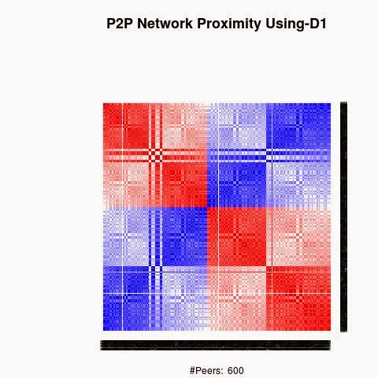
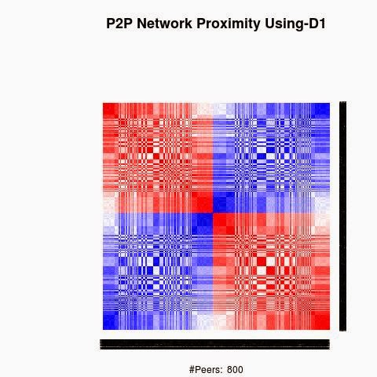
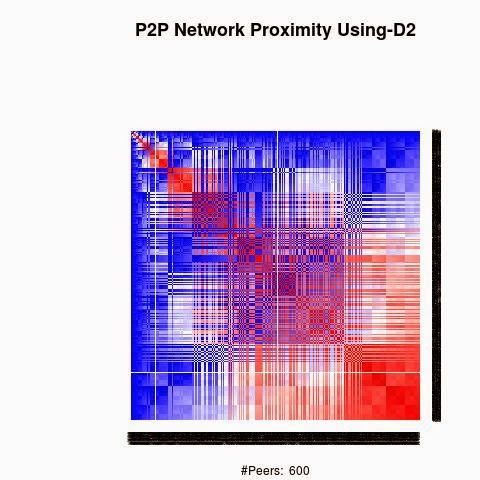
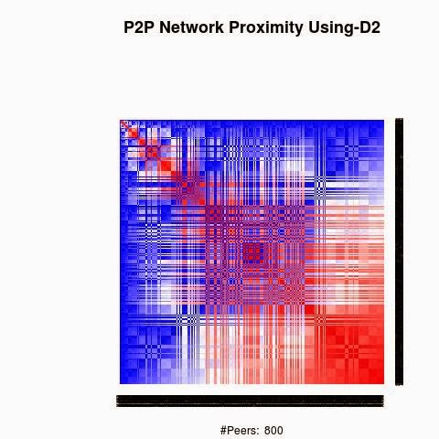
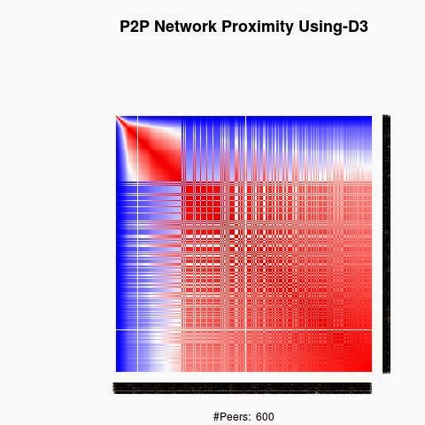
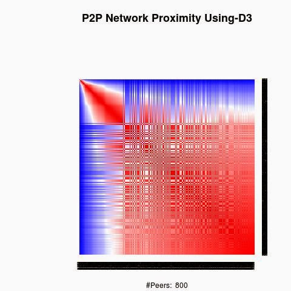
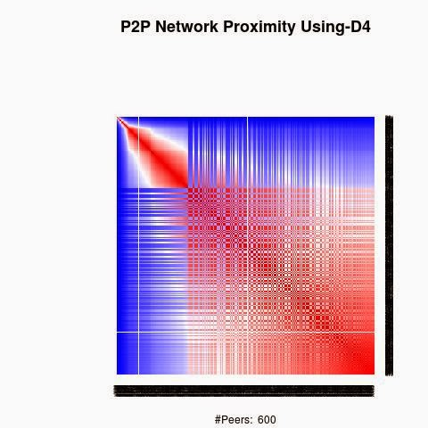
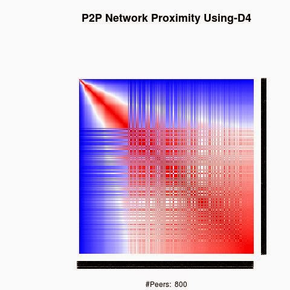
B) Keys are sorted by the associated big-Endian value:
Each key ID of a peer is a sequence of bits and when interpreted as a big-Endian integer, the keys are represented in a sorted manner along X-axis and Y-axis accordingly to their big-Endian values.
X-axis: from lower value to higher, left to right.
Y-axis: from lower value to higher, top to bottom.
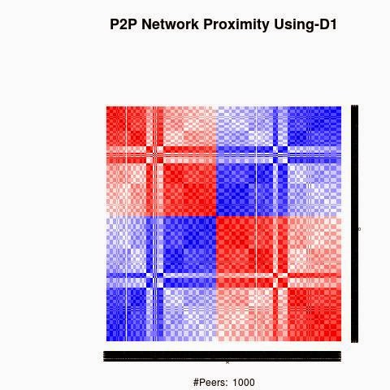
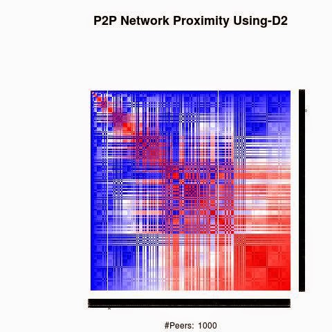
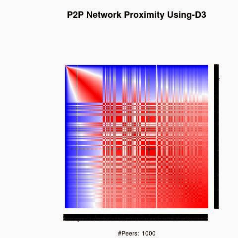
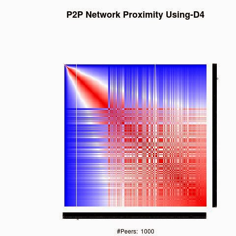
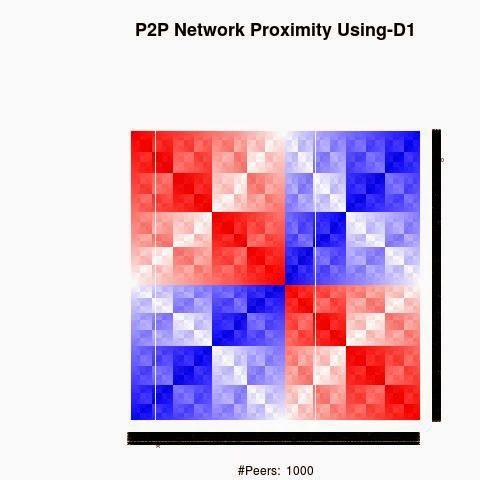
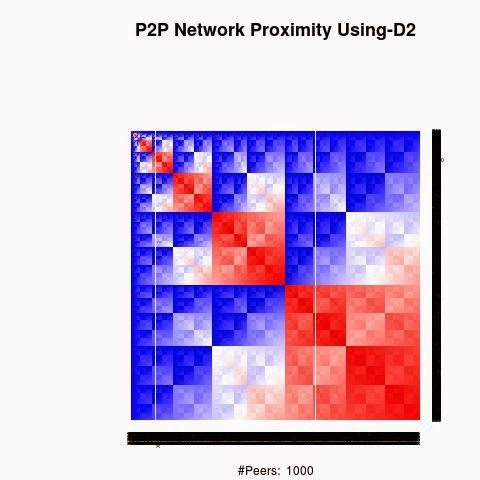
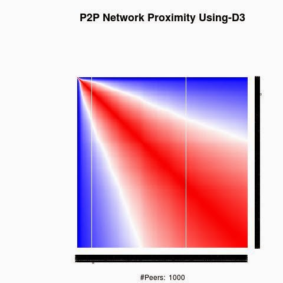
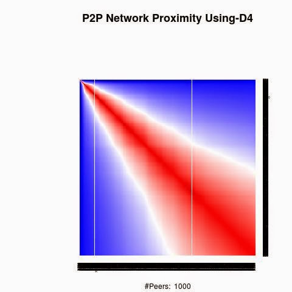
Implementation used a modified version of Ethereum C++ to extract public keys or their Hash3. Hardware is a Laptop with i3-core-CPU-2.10 GHz- 4GB-RAM and 64-bit-Ubuntu 13-10 .
Click on this link for the companion site